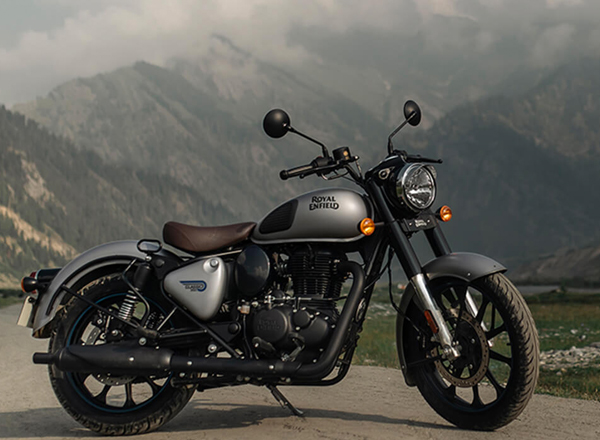
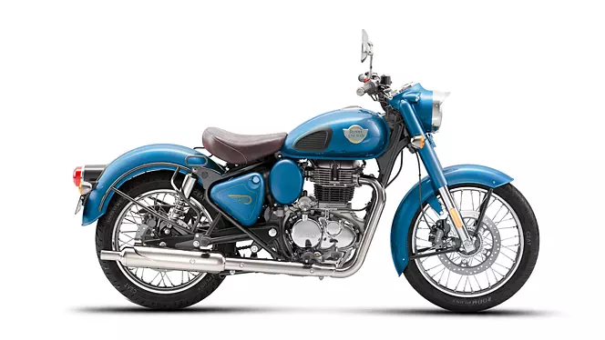

Royal Enfield bikes are known for their classic design, rugged build, and rich heritage. Founded in 1901, the brand has a loyal following, particularly among enthusiasts who appreciate the vintage aesthetic and thumping sound of their single-cylinder engines. Models like the Classic, Bullet, and Interceptor offer a blend of modern technology and retro charm, making them popular for both city commuting and long rides. Their emphasis on customization and community, including the Royal Enfield Riders' Club, adds to the brand's appeal for riders seeking a unique biking experience.
Here we have more details about our topic.
This is Royal Enfield Classic 350. The most populer bike in this section.
This is Royal Enfield Bullet 350. The most populer bike in the young generation and will be the best in the upcoming generation.